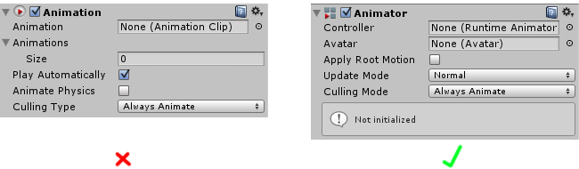

Animation FAQ
General questions
What's "Mecanim"?
Mecanim was the name of the animation software that we integrated into Unity. Early in the 4.x series of Unity, its abilities were tied specifically to humanoid character animation and it had many features which were uniquely suited for that purpose, and it was separate to our old (now legacy) integrated animation system.
Mecanim integrated humanoid animation retargeting, muscle control, and the state machine system. The name "Mecanim" comes from the French word "Mec" meaning "Guy". Since Mecanim operated only with humanoid characters, our legacy animation system was still required for animating non-humanoid characters and other keyframe-based animation of gameobjects within Unity.
Since then however, we've developed and expanded Mecanim and integrated it with the rest of our animation system so that it can be used for all aspects of animation within your project - so there is a less clear definition where "Mecanim" ends and the rest of the animation system begins. For this reason, you'll still see references in our documentation and throughout our community to "Mecanim" which has now simply come to mean our main animation system.
What's the difference between the Animation component and the Animator component?
The Animation component is an old component used for animation in our legacy animation system. It remains in Unity for backwards compatibility but you should not use it for new projects. Use the up-to-date Animator component instead.

What's the difference between the Animation window and the Animator window?
The Animation Window allows you to create and edit animation clips within Unity. You can use it to animate almost every property that you can edit in the inspector, from a Game Object's position, a material colour, a light's brightness, a sound's volume, and even arbitrary values in your own scripts.
The Animator Window allows you to organise your existing animation clip assets into a flowchart-like system called a state machine.
Both of these windows are part of our current animation system, and not the legacy system.
So the Animation Component is legacy, but the Animation Window is current?
That's correct.
We are using the legacy animation system for character animations. Should we be using the current animation system (Mecanim) instead?
Generally, yes you should. Our legacy animation system is only included for backward compatibility with old projects, and it has a very limited feature set compared with our current animation system. The only reason you should use it is for legacy projects built using the old system.
Import
Why does my imported mesh have an animator component attached to it?
When Unity detectes that an imported file has animation in its timeline, it will add an animation component on import. You can modify this in the asset's import settings by setting the "Animation Type" to None in the import settings under the Rig tab. If necessary you can do this with several files at once.
Layers
Does the ordering of the layers matter?
Yes. Layers are evaluated from top to bottom in order. Layers set to override will always override the previous layers (based on their mask, if they have a mask).
Should the weight value of the base layer always be set to one or should the weight be zero when using another layer?
The base layer weight is always 1 and override layers will completely override the base layer.
Is there any way to get a variable value from the controller without using the name string?
You can use integers to identify the states and parameters. Use the Animator.StringToHash function to get the integer identifier values. For example:
runState = Animator.StringToHash("Base Layer.Run");
animator.SetBool(runState, false);
What happens if a state on a Sync layer has a different length compared to the corresponding state in the base layer?
If layers have different lengths then they will become unsynchronized. Enable the Timing option to force the timing of the states on the current layer, on the source layer.
Avatar Masks
Is there a way to create AvatarIKGoals other than LeftFoot, RightFoot, LeftHand, RightHand?
Yes, knee and elbow IK is supported.
Is there a way to define what transforms are part of the Avatar Mask?
Yes, for Generic clips you can define which transform animation is imported or not. For Humanoid clips, all human transforms are always imported and extra transforms can de defined.
Animations curves
How do animations that have Curves blend with those that don't?
When you have an animation with a curve and another animation without a curve, Unity will use the default value of the parameter connected to the curve to do blending. You can set default values for your parameters, so when blending takes place between a State that has a Curve Parameter and one that does not have one, it will blend between the curve value and the default parameter value. To set a default value for a Parameter, simply set its value in the Animator Tool window while not in LiveLink.